Worked Example
Last updated on 2026-06-22 | Edit this page
Estimated time: 70 minutes
Overview
Questions
- What can a typical machine learning project look like from start to finish?
- What core approaches should I consider when starting a machine learning problem?
Objectives
- Understand the core structure and the key stages of a machine learning project.
- Work through a complete example, from importing data to evaluating results.
- Consider what each stage might look like for your own problem.
Dive right in.
We are jumping in the deep end. The aim of this session is to walk through a worked example. Do not worry if you do not understand everything right away; that is completely normal. This first run-through is designed to give you a high-level sense of how all the pieces fit together.
Throughout the week, we will return to each stage of this process in more detail so that you will have a much clearer and richer understanding of each section. As you work through this example, try to think about how some of these steps might apply to your own data or problem.
Introduction
Throughout the week, we are going to use a horse blink dataset as our example. Everyone is familiar with blinking, as you do it thousands of times a day, but the process of blinking is easy to underestimate. Blinking is a dynamic movement rather than a simple on/off event; each blink has a structure. In a single blink event, closing and opening can vary in timing, speed, and completeness. Not every blink will be the same.
The main function of blinking is to protect the eye from irritation or damage. In addition we know that blink behaviour can change across many animals depending on context, attention, stress, fatigue, or internal state. This makes blinking more than just a reflex; it can be treated as a small behavioural signal that may reveal something about the individual or the situation they are in.
An interesting example of blink behaviour is the classic “cat slow blink”. This is the relaxed, sleepy-looking eye-narrowing blink we often see in cats. Research suggests that cats are more likely to slow-blink back at humans who slow-blink at them and may even be more likely to approach someone after a slow blink interaction Humphrey et al. (2020).
So, while slow blinking at a cat is not a guaranteed way to start a friendship, it might be a good way of saying “I’m a cat person” in a language that cats can understand.
Let’s get back to horses and continue with today’s content.
Scenario: Blink and you’ll miss it
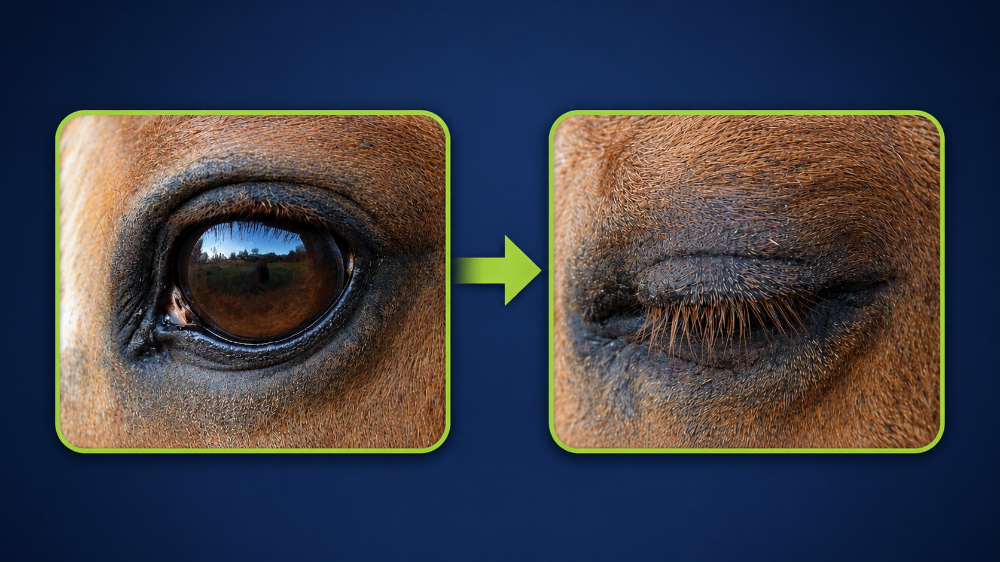
Dr Epona, a researcher studying horse behaviour, is interested in whether blink patterns could provide a useful indicator of stress. Her hypothesis is that a higher ratio of half blinks to full blinks may be associated with a more stressed individual.
However, classifying a blink as a half blink or a full blink requires expertise, and there is often some disagreement between annotators. It is a significant bottle-neck in the process. By contrast, identifying when the blink occurs, although still time-consuming, is a simpler task that requires less specialist judgement. Therefore, Dr Epona wants to explore whether simple measurements taken from blink timings could help distinguish between the two blink types.
To investigate this, one of Dr Epona’s PhD students has manually annotated 23 videos, from four different horses, and produced a tabular dataset of horse blink events.
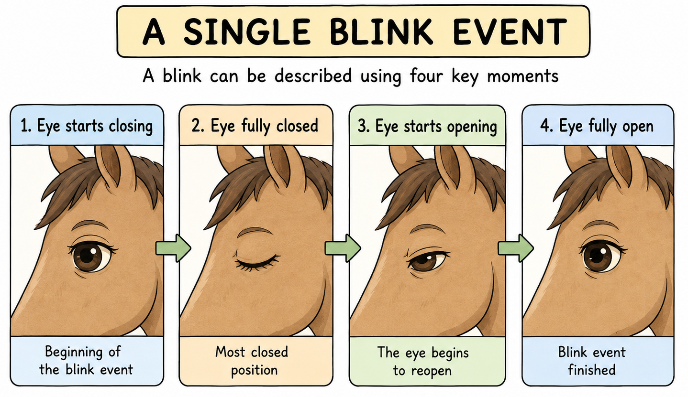
For each blink, the PhD student recorded:
- the frame where the eye started closing
- the frame where the eye returned to fully open
- and if the blink was a half blink or a full blink
For some of the blinks they also recorded:
- the frame where the eye reached its most closed position
- the frame where the eye started re-opening
Dr Epona now wants to know whether these timing measurements can be used to train a model to classify blink type.
What do a full blink and a half blink look like?
Here are two blinks, side by side, in normal, half, and quarter speed. You may want to watch them several times to fully appreciate the difference.
Representing the expected difference between half blinks and full blinks
If we were able to perfectly measure the distance between the horse
eyelids, we could plot each event as the changing state of fully open
and fully closed. We might expect a full blink and a half blink to look
something like this:
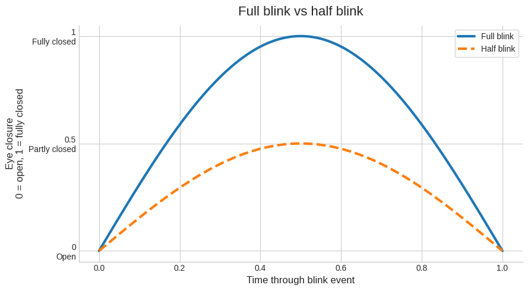
Scenario Problem Definition
First, we need to define the question in practical terms:
- Output: blink type, either half blink or full blink
- Input: features created from the blink timing measurements
- Aim: reduce/replace the need for time-consuming expert manual classification
Based on this, we could start with the following problem definition:
This is a useful starting point, but possibly not precise enough.
For example, we need to clarify:
- Accurately?
- Which specific duration features will we use?
- How good does the model need to be before it is useful? Does it need to match the level of agreement we would expect between two human annotators?
These questions matter because a good problem definition helps us decide what data we need, what features to create, which model to train, and how to evaluate whether the model is useful.
For example, if we want a model that performs similarly to human annotators, our problem definition might become:
This is now more precise, but it also reveals a gap in our data. To know whether the model performs comparably to expert annotators, we would need the same blink events labelled by more than one expert. Without multiple expert annotations, we cannot estimate normal annotator disagreement, so we cannot directly compare the model’s performance with human agreement.
In this example, we can still train and evaluate a model using the data we have. However, we need to be careful when interpreting the result. An accuracy score tells us how often the model was correct, but it does not tell us whether that performance is good enough for the task. For example, 80% accuracy might be useful in one research context but inadequate in another. This depends on how the blink classifications will be used, how much natural variation exists in the data, and what level of error is acceptable for the underlying research question.
Therefore, we will treat this worked example as a proof-of-concept study: the aim is not to build a final model, but to test whether simple blink duration features appear to contain useful information for distinguishing between half and full blinks.
Next, to the code
Now that we have defined the task, we will use this scenario to walk through the typical stages of a machine learning project.
You have been provided with the code, so feel free to run it on your own machine as we go. If you would rather watch and listen, that is completely fine too.
These are the next steps in our journey:
- Import and explore the data: Load the horse blink dataset into our environment and use its metadata to better understand its structure.
- Preprocess the data: Engineer blink duration features from the dataset and prepare the data for modelling.
- Train and validate: Split our data into appropriate training and validation splits.
- Select models: Compare a simple baseline model with a more advanced model.
- Evaluate results: Measure how well the models classify half and full blinks and think carefully about what conclusions we can make.
Set-up
Import Libraries
We’ll start by importing the libraries we need and then loading our dataset so we can begin exploring it.
PYTHON
# Import the libraries we need for this worked example
# Finding and processing files
import glob
from pathlib import Path
from itables import show
# Visualisation
import matplotlib.pyplot as plt
# Storing and processing values
import numpy as np
import pandas as pd
# Machine learning models and evaluation tools
from sklearn.ensemble import RandomForestClassifier
from sklearn.metrics import ConfusionMatrixDisplay, accuracy_score
from sklearn.model_selection import StratifiedKFold, cross_val_predict, cross_val_score
from sklearn.tree import DecisionTreeClassifier, plot_treeImport the data
Next, we need to import the CSV files into our Python session. In the AIB folder you downloaded, you should see a data folder that contains a metadata file. Here we have access to the annotations folder containing the annotated blink event files created by the PhD student. Each annotated file corresponds to a raw video file. The file structure is shown below:
AIB26_content/
├── data/
│ ├── horseblink_metadata.csv
│ └── annotations/
│ ├── G-003.csv
│ ├── G-004.csv
│ └── ...The following code finds all CSV file names in the annotations folder and saves them in a list. We then print the file names and the total number of files found.
PYTHON
# Find all CSV files in the 'annotations' folder
file_list = sorted(glob.glob("data/annotations/*.csv"))
# Print each file name so we can check what has been found
for file_name in file_list:
print(file_name)OUTPUT
data/annotations\G-003.csv
data/annotations\G-004.csv
data/annotations\G-005.csv
data/annotations\M-001.csv
data/annotations\M-002.csv
data/annotations\M-003.csv
data/annotations\M-004.csv
data/annotations\M-005.csv
data/annotations\M-006.csv
data/annotations\M-007.csv
data/annotations\M-008.csv
data/annotations\P-001.csv
data/annotations\P-002.csv
data/annotations\P-003.csv
data/annotations\P-004.csv
data/annotations\P-005.csv
data/annotations\P-006.csv
data/annotations\P-007.csv
data/annotations\Y-001.csv
data/annotations\Y-002.csv
data/annotations\Y-003.csv
data/annotations\Y-004.csvOUTPUT
Number of files: 22Exploration
First, we need to inspect the metadata file to make sure we understand what we are dealing with. The following code opens the metadata file, prints the column names and then shows some data values from selected columns.
PYTHON
# Load the video metadata file
metadata = pd.read_csv("data/horseblink_metadata.csv")
print(metadata.columns)OUTPUT
Index(['Unnamed: 0', 'file_name', 'frame_rate', 'frame_count',
'duration_seconds', 'video_id', 'horse_id', 'file_extension'],
dtype='object')OUTPUT
file_name frame_rate file_extension
0 data/raw_video\G-003.mov 30.00 .mov
1 data/raw_video\G-004.mp4 60.00 .mp4
2 data/raw_video\G-005.mp4 60.00 .mp4
3 data/raw_video\M-001.mov 30.00 .mov
4 data/raw_video\M-002.mp4 23.98 .mp4
5 data/raw_video\M-003.mp4 23.98 .mp4
6 data/raw_video\M-004.mp4 59.94 .mp4
7 data/raw_video\M-005.mp4 59.94 .mp4
8 data/raw_video\M-006.mp4 59.93 .mp4
9 data/raw_video\M-007.mp4 60.00 .mp4
10 data/raw_video\M-008.mp4 23.98 .mp4
11 data/raw_video\P-001.mov 30.00 .mov
12 data/raw_video\P-002.mp4 23.98 .mp4
13 data/raw_video\P-003.mp4 59.96 .mp4
14 data/raw_video\P-004.mp4 59.94 .mp4
15 data/raw_video\P-005.mp4 59.94 .mp4
16 data/raw_video\P-006.mp4 59.94 .mp4
17 data/raw_video\P-007.mp4 59.94 .mp4
18 data/raw_video\Y-001.mp4 23.98 .mp4
19 data/raw_video\Y-002.mp4 23.98 .mp4
20 data/raw_video\Y-003.mp4 60.00 .mp4
21 data/raw_video\Y-004.mp4 59.94 .mp4What important things does the metadata tell us?
In your groups, take a minute to discuss:
- What do you think we might need to pay attention to from this metadata file?
- Are there any values in the metadata that could change how we analyse the blink data?
- Does your own data have related metadata?
If your data does have metadata:
- What information does it contain?
- Is it stored with the main data, or in a separate file?
- Would you need to consider it in conjunction with your main dataset before analysis?
Or, if your data does not have metadata:
- Is there any extra information that would help you understand or analyse your data?
- Could missing metadata make your analysis harder?
- What would have been useful for your data?
After discussing, be ready to share one thing your group discussed with the room.
What does this metadata file tell us?
We can see that many of the videos have different frame rates. The data we are loading records the specific frame number for each stage of the blink, so if we want to compare blinks fairly, we need to convert these frames into a common time format. As the blinks are temporal events and we want to explore their duration, it makes sense to convert them from the original frame numbers into units of time (we will mostly be working in fractions of seconds).
Converting our data from frame numbers to seconds
We will load each file into Python and use the metadata to apply the correct frame-rate conversion for its corresponding video. We will achieve this by dividing the frame number by the video’s frame rate.
PYTHON
# Keep only the columns we need to identify each file and extract frame rate
metadata = metadata[["video_id", "frame_rate"]]
# Create a list to hold the DataFrame from each annotations file
dataframes = []
# These are the columns that contain frame numbers
frame_columns = ["Eye_starts_closing", "Eye_most_closed_pos", "Eye_starts_opening", "Eye_open"]
# Read each CSV file and add its DataFrame to the list
for file_name in file_list:
# Read the CSV file
temp_df = pd.read_csv(file_name)
# Get just the video ID from the CSV file name e.g. "data/ground_truth/G-003.csv" becomes "G-003"
video_id = Path(file_name).stem
# Get the horse ID from the video ID e.g. "G-003" becomes "G"
horse_id = video_id.split("-")[0]
# Add ID columns
temp_df["video_id"] = video_id
temp_df["Horse_ID"] = horse_id
# Look up the frame rate for this video
matching_metadata = metadata[metadata["video_id"] == video_id]
# Get the frame rate
frame_rate = matching_metadata["frame_rate"].iloc[0]
# Convert frame number columns into seconds (NaN values will stay as NaN)
for column in frame_columns:
temp_df[column + "_frame"] = temp_df[column]
temp_df[column] = temp_df[column] / frame_rate
# Add this DataFrame to the list
dataframes.append(temp_df)
# Print the number of files stored
print("Number of files processed and stored:",len(dataframes), "\n")OUTPUT
Number of files processed and stored: 22 OUTPUT
First 5 lines of an example file:
Eye_starts_closing ... Eye_open_frame
0 0.833333 ... 29
1 5.433333 ... 170
2 5.800000 ... 180
3 8.233333 ... 254
4 9.033333 ... 277
[5 rows x 11 columns]Data wrangling
Data wrangling is the process of getting raw data into a useful format before we analyse it or use it to train a model. In this example we have multiple files, so how should we organise them? We could inspect them separately, or consider different subsets (e.g., by horse, by date, etc.).
For now, we will combine them into a single dataframe. We are able to do this because all the files follow the same format (this might not be the case with your dataset). The aim is to get the data into a usable shape. In this example, that is fairly simple, but in your own projects, the level of complexity will depend on your dataset and what you are trying to achieve. This code combines all the files stored in the dataframes list and then prints the total number of events in the combined dataframes, df_blinks.
PYTHON
# Combine all DataFrames into one larger DataFrame
df_blinks = pd.concat(dataframes, ignore_index=True)
# Print the total number of blink events
print("Number of events in dataframe:", len(df_blinks.index))OUTPUT
Number of events in dataframe: 609What is the best practice for the modified data?
Now that we have loaded, edited, and combined our original raw annotation data into a single large dataframe, it is good practice to save these modifications (important: we do not overwrite the original data). Doing this will allow us to open up this exact data without re-running the code each time. We often want to organise our data in a specific way and then run multiple streams of analysis on it. This allows us to do that without having to duplicate the organisational code every time.
Inspect the Data
Before doing anything else, we want to understand what our data ‘looks like’. We’ll start by inspecting the first 10 rows, the column names, and checking the shape of the table to see how many rows (events) and how many columns (features) it contains.
OUTPUT
Combined dataset shape:
(609, 11)The printed output shows us how many rows and columns are present in the combined dataset.
OUTPUT
Column names:
['Eye_starts_closing', 'Eye_most_closed_pos', 'Eye_starts_opening', 'Eye_open', 'Blink_type', 'video_id', 'Horse_ID', 'Eye_starts_closing_frame', 'Eye_most_closed_pos_frame', 'Eye_starts_opening_frame', 'Eye_open_frame']We see from the outputted column names the dataset contains the expected features describing a blink event
OUTPUT
First 10 rows:
Eye_starts_closing ... Eye_open_frame
0 0.833333 ... 29
1 5.433333 ... 170
2 5.800000 ... 180
3 8.233333 ... 254
4 9.033333 ... 277
5 10.600000 ... 327
6 11.100000 ... 343
7 12.600000 ... 386
8 14.266667 ... 437
9 14.766667 ... 448
[10 rows x 11 columns]Finally, when we visualise the first 10 rows we can see that there are missing values (NaN) in the dataset. These outputs to the console are not the easiest to read so let’s look at a way that is a little easier to inspect.
The next section of code visualises the combined dataset in such a way that we can inspect each row and column.
PYTHON
# Show the full dataframe as an interactive table
show(df_blinks, scrollX=True, scrollY="500px", paging=True)What can we see in this new view?
We can see that there are lots of missing values in the ‘Eye_most_closed_pos’ and ‘Eye_starts_opening’ columns. This many missing values can be problematic. We will continue for now, but we will return to missing values during the pre-processing stage to gain a fuller understanding of what is missing and where.
Save the processed data
We can save this to a new .csv file in our processed data folder.
PYTHON
# Save the dataframe to our output file
df_blinks.to_csv("data/processed/all_blink_events.csv", index=False)Load the processed data
Now we have the data organised how we wanted we can start to explore it. Let’s practice by opening up the file we just saved to continue the analysis.
Our first idea: can we separate half blinks and full blinks by their total duration?
We might (reasonably) assume that half blinks are shorter than full blinks. So the question becomes: Can we separate blink types by the duration of the event? i.e., “Are full blinks just longer than half blinks?”. Before we rush ahead and over-engineer a solution, let’s explore this idea by calculating each event’s full duration, then separating blink distribution by blink type. Then we could place a boundary and use it to distinguish blink type. For example, any durations less than 0.5 seconds would be classified as half blinks, and any durations greater than 0.5 seconds would be classified as full blinks.
PYTHON
# Calculate blink event duration
df_blinks["duration"] = df_blinks["Eye_open"] - df_blinks["Eye_starts_closing"]
# Create bins from 0 to 1.4, increasing by 0.1
bins = np.arange(0, 1.5, 0.1)
# Generate a figure and supply dimensions
plt.figure(figsize=(8, 5))
# For each blink type (full and half)
for blink_type in sorted(df_blinks["Blink_type"].unique()):
# Get the data related to each blink type
blink_data = df_blinks[df_blinks["Blink_type"] == blink_type]
# Visualise as a histogram using the same bins
plt.hist(blink_data["duration"], bins=bins, alpha=0.5, label=blink_type)
# Draw a red dashed line at x = 0.5 to represent our boundary
plt.axvline(x=0.5, color="red", linestyle="--", label="Example boundary = 0.5")
# Apply axis labels, legend, and show plot
plt.xlabel("Overall blink duration (seconds)")
plt.ylabel("Count")
plt.xticks(bins);
plt.tight_layout()
plt.legend()
plt.show()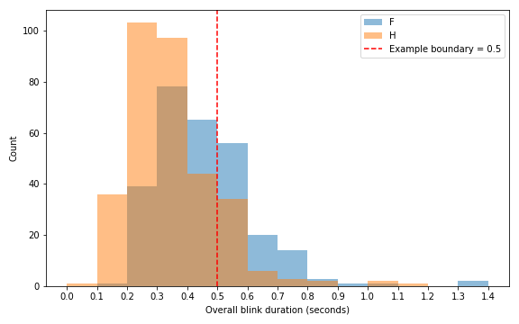
What does this histogram show us?
The full blink distribution extends further to the right, meaning full blinks have more longer-duration events. Half blinks are more concentrated at shorter durations. However, there is a lot of overlap; both full and half blinks commonly occur around roughly the same duration range, especially around the lower-to-middle values.
How could we decide a boundary?
We drew an example boundary line at 0.5 seconds but let’s explore how other boundaries would perform. In this code, we test all the boundaries we used for our histogram.
PYTHON
# Store the results
boundary_results = []
# Test each boundary in the bins
for boundary in bins:
# Predict half blink if duration is below the boundary and full blink if duration is equal to or above the boundary
predicted_type = np.where(df_blinks["duration"] < boundary, "H", "F")
# Check whether each prediction is correct, generates series of true/false results
correct_predictions = predicted_type == df_blinks["Blink_type"]
# Calculate accuracy from (True = 1, False = 0)
accuracy = correct_predictions.mean()
# Count correct and incorrect predictions
number_correct = correct_predictions.sum()
# Total - correct = incorrect
number_incorrect = len(correct_predictions) - number_correct
# For each boundary store the result
boundary_results.append({
"boundary": boundary,
"number_correct": number_correct,
"number_incorrect": number_incorrect,
"accuracy": accuracy
})
# Convert results into a dataframe
boundary_results = pd.DataFrame(boundary_results)
# View the results
boundary_resultsOUTPUT
boundary number_correct number_incorrect accuracy
0 0.0 280 329 0.459770
1 0.1 281 328 0.461412
2 0.2 316 293 0.518883
3 0.3 380 229 0.623974
4 0.4 399 210 0.655172
5 0.5 378 231 0.620690
6 0.6 356 253 0.584565
7 0.7 342 267 0.561576
8 0.8 331 278 0.543514
9 0.9 330 279 0.541872
10 1.0 329 280 0.540230
11 1.1 330 279 0.541872
12 1.2 331 278 0.543514
13 1.3 331 278 0.543514
14 1.4 329 280 0.540230PYTHON
# Create a figure
plt.figure(figsize=(8, 5))
# Plot accuracy for each boundary
plt.plot(boundary_results["boundary"], boundary_results["accuracy"], marker="o")
# Add labels, title & show the plot
plt.xlabel("Boundary value in seconds")
plt.ylabel("Accuracy")
plt.title("Accuracy for each blink duration boundary")
plt.show()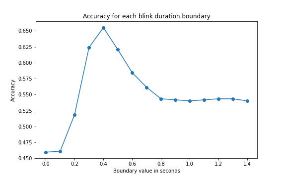
What do the boundary results tell us?
We can see from the table that the best boundary was 0.4 seconds, with an accuracy of around 65%. This is better than guessing randomly, but still leaves 209 blinks incorrectly classified. This suggests that total blink duration can be useful, but it is not enough by itself to reliably separate full and half blinks. Now we know that we cannot fully separate blink type by event duration lets explore the data and see what other options we have.
Pre-processing
Dealing with missing values
Earlier we discovered that there are missing values in the dataset. To assess to what degree they are likely to cause a problem, we can count how many appear in each column.
PYTHON
# Columns we want to check for missing values
check_for_missing = ['Eye_starts_closing','Eye_most_closed_pos','Eye_starts_opening','Eye_open', 'Blink_type']
# Count how many missing values there are in each column
# isna() marks missing values as True
# sum() then counts how many True values appear in each column
missing_values = df_blinks[check_for_missing].isna().sum()
print(missing_values)OUTPUT
Eye_starts_closing 0
Eye_most_closed_pos 447
Eye_starts_opening 423
Eye_open 0
Blink_type 0
dtype: int64Missing values from certain columns
There are a large number of missing values that appear in the Eye_most_closed_pos and Eye_starts_opening columns. These columns are required for us to calculate anything other than total duration, which means those rows provide no additional information. However, if we look closely, we can see that we have fewer missing values from Eye_starts_opening than Eye_most_closed_pos.
PYTHON
# From df_blinks, take all rows where Eye_starts_opening is not NA and Eye_most_closed_pos is NA.
rows_to_check = df_blinks[df_blinks["Eye_starts_opening"].notna() & df_blinks["Eye_most_closed_pos"].isna()]
print(rows_to_check[["Eye_starts_opening","Eye_most_closed_pos","Blink_type"]])OUTPUT
Eye_starts_opening Eye_most_closed_pos Blink_type
288 15.648982 NaN H
289 19.786453 NaN H
292 27.043710 NaN H
298 6.940274 NaN H
301 11.428095 NaN H
306 21.538205 NaN H
307 22.622623 NaN H
308 25.458792 NaN H
309 29.496163 NaN H
544 0.066733 NaN H
547 10.360360 NaN H
555 34.267601 NaN H
556 0.633967 NaN H
557 10.076743 NaN H
560 25.875876 NaN H
599 2.218886 NaN H
600 2.869536 NaN H
601 31.297965 NaN H
603 36.136136 NaN H
604 40.757424 NaN H
605 50.967634 NaN H
606 58.758759 NaN H
607 70.086753 NaN H
608 70.587254 NaN HWhat can we infer from this subset of missing values?
We can see that these missing values occur only in half blink events.
One possible explanation is that no Eye_most_closed_pos value was entered because there was no clear frame where the eyelid paused in its most closed position. In other words, the eyelid may have moved from closing straight into opening, without staying in the same position for more than one frame.
Based on this, one possible approach would be to fill the missing values in Eye_most_closed_pos using the value recorded in Eye_starts_opening.
This is a reasonable idea to consider, but it is important to remember that it is still an assumption. Before making this change, we should think about what risks it might introduce.
What are the risks of this approach to missing values?
In your groups, take a minute to discuss how this approach could be problematic.
You might want to think about:
- How certain are we that the missing value means there was no pause at the most closed position?
- Why else might the value be missing?
- How could this change affect full and half blinks?
- What compromises or additional work could be made?
There is not one perfect answer here. The aim is to think carefully about whether filling missing values is justified, and how we could make that decision transparent.
Callout
The lack of Eye_most_closed_pos values may also indicate that the frame rate of the videos is not high enough to capture the distinct stages of the event we are interested in recording. This insight could help inform the experimental design of future data collection.
Replace the NAs that we can
In this scenario, we will go ahead and fill the missing values using
the Eye_starts_opening column data. With more time, best
practice would be to validate this assumption and add a flag to records
in which values were imputed.
PYTHON
# Fill missing Eye_most_closed_pos values using Eye_starts_opening
df_blinks["Eye_most_closed_pos"] = df_blinks["Eye_most_closed_pos"].fillna(df_blinks["Eye_starts_opening"])
# Check the missing values again
missing_values = df_blinks[check_for_missing].isna().sum()
print(missing_values)OUTPUT
Eye_starts_closing 0
Eye_most_closed_pos 423
Eye_starts_opening 423
Eye_open 0
Blink_type 0
dtype: int64Updated missing value numbers
We can now see that we have an equal number of missing values in both columns. As previously stated, without times for Eye_most_closed_pos and Eye_starts_opening, we cannot calculate any new information from these rows. Therefore, we will remove any rows that contain missing values. This is a convenient teaching choice, but it comes at a cost. After cleaning, we keep a much smaller subset of our original 612 blink events. Later in the week, we will look at other ways to handle missing values.
PYTHON
# Remove rows with missing values and make a copy of the cleaned result
df_blinks_c = df_blinks.dropna(subset=check_for_missing).copy()
# Reset the index so the cleaned DataFrame has a simple continuous row number
df_blinks_c = df_blinks_c.reset_index(drop=True)
# Check the shape after cleaning
print("Post-cleaning shape:", df_blinks_c.shape)OUTPUT
Post-cleaning shape: (186, 12)Visualise a blink
We can take a full blink event and a half blink event and visualise them. This will give us a better understanding of the features we could extract from each event.
PYTHON
# Take one full blink and one half blink example
full_blink_event = df_blinks_c[df_blinks_c["Blink_type"] == "F"].iloc[0, :4]
half_blink_event = df_blinks_c[df_blinks_c["Blink_type"] == "H"].iloc[0, :4]
# Re-zero each event so both start at 0 seconds
full_blink_event = full_blink_event - full_blink_event.iloc[0]
half_blink_event = half_blink_event - half_blink_event.iloc[0]
# Plot both blink events against the known state
# 0 is open, 1 is closed
plt.figure(figsize=(7, 4))
# Plot assuming the eye is fully closed for the full blink and half closed for the half blink.
plt.plot(full_blink_event, [0, 1, 1, 0], marker="o", color="blue", label="Full blink")
plt.plot(half_blink_event, [0, 0.5, 0.5, 0], marker="o", color="orange", label="Half blink")
# Label and show the plot
plt.yticks([0, 1], ["Eye open", "Eye closed"]);
plt.xlabel("Seconds")
plt.ylabel("Eye state")
plt.legend()
plt.show()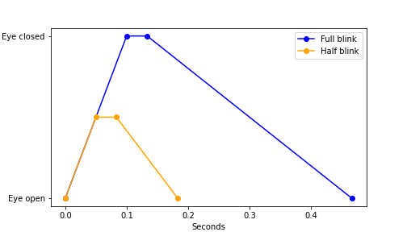
Feature Engineering
Feature engineering is the process of creating useful input variables, called features, from the raw data. In our example, the time in seconds when the events occurred is not that useful for understanding the blink’s underlying structure. More useful would be to convert the time points into durations which can be compared between events. Let’s go ahead and think about what measures we can generate.
From the raw data we can calculate:
- Closing duration: the time it takes for the eye to reach its most closed position.
- Paused duration: the time the eyelid remains at its most closed position (i.e., is no longer closing but has not started opening).
- Opening duration: the time it takes for the eye to fully open from its most closed position.
We can represent the durations on one of the blink events.
PYTHON
# Take an event
event = df_blinks_c.iloc[0, :4]
#Generate a figure
plt.figure(figsize=(9, 4))
# Plot the event 0 being open 1 being most closed position
plt.plot(event, [0, 1, 1, 0], marker="o")
# dd labels to the plot demonstrating which part each duration applies to
plt.text((event.iloc[0] + event.iloc[1])/2, .5, "Closing duration", ha="center", bbox=dict(facecolor="white"))
plt.text((event.iloc[1] + event.iloc[2])/2, 1.1, "Paused duration", ha="center", bbox=dict(facecolor="white"))
plt.text((event.iloc[2] + event.iloc[3])/2, .5, "Opening duration", ha="center", bbox=dict(facecolor="white"))
# Create plot labels, title and set axis
plt.yticks([-0.2, 0, 1, 1.2], ["", "Eye open", "Eye most closed", ""]); # Creates room for labels to display correctlyOUTPUT
([<matplotlib.axis.YTick object at 0x0000023ED081D8D0>, <matplotlib.axis.YTick object at 0x0000023ECD478110>, <matplotlib.axis.YTick object at 0x0000023ED07F0410>, <matplotlib.axis.YTick object at 0x0000023ED0B2FFD0>], [Text(0, -0.2, ''), Text(0, 0.0, 'Eye open'), Text(0, 1.0, 'Eye most closed'), Text(0, 1.2, '')])PYTHON
plt.xlabel("Seconds")
plt.ylabel("Eye state")
plt.title("Blink event timing features")
plt.show()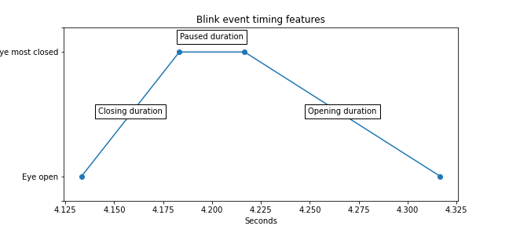
How do we assess if the features are useful?
After generating the features, we can print summary statistics for each feature as a first check. This helps us check whether the values look sensible, for example whether the minimums, maximums, and ranges are plausible. It can also help us start to seewhether the feature values differ between blink events, although we will need visualisations and modelling to explore this properly.
PYTHON
# Create new features for each stage of the blink event
# Closing duration - duration from eye fully open to eye and most closed state
df_blinks_c["closing_duration"] = df_blinks_c["Eye_most_closed_pos"] - df_blinks_c["Eye_starts_closing"]
# Paused duration - duration where eyelid is no longer closing but also not opening
df_blinks_c["paused_duration"] = df_blinks_c["Eye_starts_opening"] - df_blinks_c["Eye_most_closed_pos"]
# Opening duration - duration from the eye's most fully closed position until it reaches the open position
df_blinks_c["opening_duration"] = df_blinks_c["Eye_open"] - df_blinks_c["Eye_starts_opening"]
# Show summary statistics for each new engineered feature
print("Summary of closing duration:\n", df_blinks_c["closing_duration"].describe())OUTPUT
Summary of closing duration:
count 186.000000
mean 0.134202
std 0.070979
min 0.033367
25% 0.083417
50% 0.125104
75% 0.162544
max 0.550551
Name: closing_duration, dtype: float64OUTPUT
Summary of paused duration:
count 186.000000
mean 0.038339
std 0.038734
min 0.000000
25% 0.016678
50% 0.041701
75% 0.041701
max 0.266934
Name: paused_duration, dtype: float64OUTPUT
Summary of opening duration:
count 186.000000
mean 0.269388
std 0.133456
min 0.033367
25% 0.166834
50% 0.250209
75% 0.333611
max 0.884218
Name: opening_duration, dtype: float64Visualisation
To gain further insight, we can visualise these durations to inspect their distributions.
We will use histograms, but there are many different ways to visualise data that might make more sense for your data. Here, they allow us to see the overall shape of the data, such as whether most values are small or large, or whether there are unusual values. We can also use them to see if groups overlap (e.g., full and half blinks). This will help us begin to explore whether these engineered durations give us a clear way to separate the two blink types. First, we will just look at the three durations as a whole.
PYTHON
# Choose the features we want to visualise
distribution_features = ["closing_duration", "paused_duration", "opening_duration"]
# Find one shared x-axis range across all three features
x_min = df_blinks_c[distribution_features].min().min()
x_max = df_blinks_c[distribution_features].max().max()
# Create one shared set of bins so the histograms are easier to compare
shared_bins = np.linspace(x_min, x_max, 51)
plt.figure(figsize=(10, 12))
# Loop through the features and make one histogram for each
for i, feature in enumerate(distribution_features, start=1):
plt.subplot(len(distribution_features), 1, i)
df_blinks_c[feature].hist(bins=shared_bins)
plt.xlim(x_min, x_max)
plt.xlabel(feature)
plt.ylabel("Count")
plt.tight_layout()
plt.show()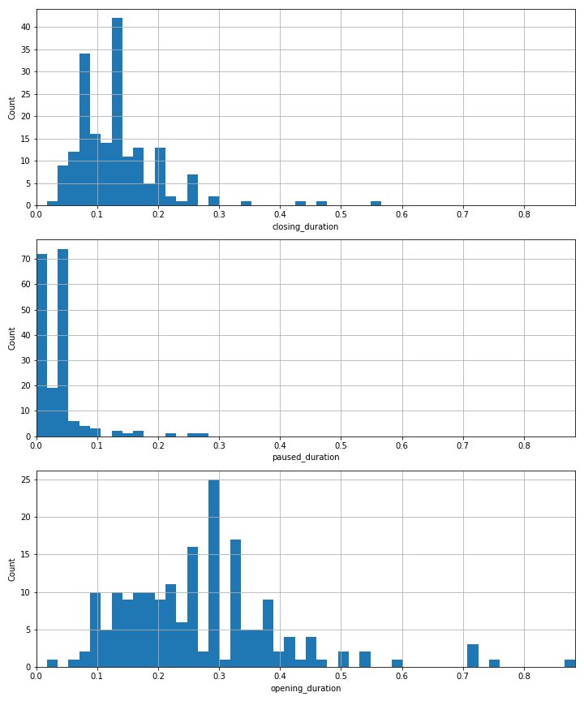
What do these distributions tell us?
We can see that all three blink-phase features are right-skewed (a data distribution where the tail extends toward higher values on the right side), meaning that most blink events are quite short, with a smaller number that last longer. This suggests that short blink phases are common, but there still looks to be some meaningful variation in the dataset.
The paused duration values are very concentrated near the lower end, suggesting that the eye is usually at its most closed position for only a very short period of the blink. The closing duration values are still mostly small, although there are a few longer events, and the opening duration values appear the most spread out, which suggests that this phase may vary more between blink events.
Overall, these distributions suggest that the blink phases are not all behaving in exactly the same way. This is useful, because if different blink types tend to have different timing patterns, then these features may contain information that can help a machine learning model distinguish between half blinks and full blinks.
Would you consider any of the points displayed in the histograms as outliers?
In your groups, take a minute to discuss what you think an outlier means.
You might want to think about:
- Is an outlier simply a value that is too far away from most other values?
- Could a value be unusual but still meaningful?
- How could you identify if a value is an error in data collection or recording?
- Is there a specific way your discipline defines an outlier?
There is no single right answer to the question of what counts as an outlier. The important thing is to start thinking about how you decide whether a value is unusual but legitimate, or whether it requires an action (e.g., removal).
We will consider outliers and how to deal with them in more detail during the week.
Checking feature distributions by blink type
We can explore feature distributions by blink type to check whether the feature values differ between full and half blinks. If the distributions look different, it suggests that these features may contain useful information for predicting blink type. This does not prove that the features will work well in a model, but it gives us a reason to test them further.
PYTHON
# Create a figure
plt.figure(figsize=(10, 12))
# Loop through each feature
for i, feature in enumerate(distribution_features, start=1):
# Create a subplot for each feature (Number of features,1,i)
plt.subplot(len(distribution_features), 1, i)
# Plot each blink type on the same histogram
for blink_type in ["F", "H"]:
# Take the subset (half / full)
subset = df_blinks_c[df_blinks_c["Blink_type"] == blink_type]
# Generate a histogram for each subset, alpha allows us to see both if they overlap.
plt.hist(subset[feature], bins=shared_bins, alpha=0.5, label=blink_type)
# Set x ticks to match the bins
plt.xlim(x_min, x_max);
# Label the axis
plt.xlabel(feature)
plt.ylabel("Count")
plt.legend(title="Blink type")
# Show the plot
plt.tight_layout()
plt.show()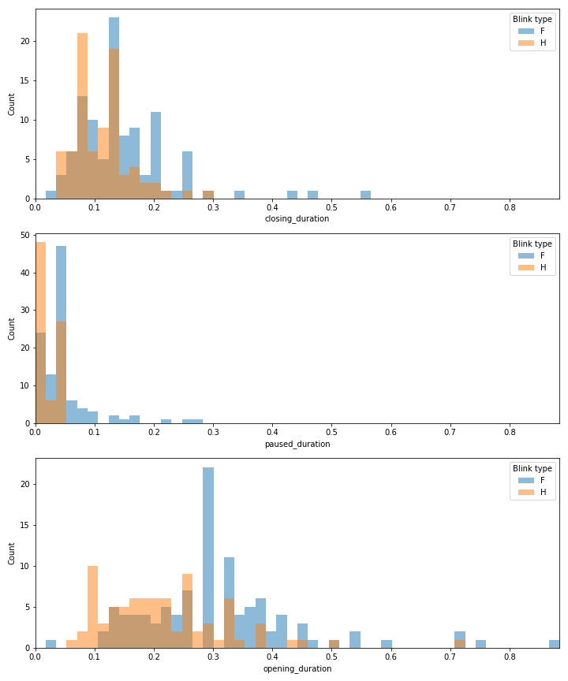
What do these distributions show us?
The distributions suggest that blink duration features may contain useful information for distinguishing full and half blinks, particularly opening duration and closing duration. However, there is still clear overlap between the classes, so these features, on their own, may not perfectly separate blink types.
It also raises two new concerns:
There is a suspiciously short full blink opening duration that suggests an error in the data.
It looks like there are more full blinks than half blinks.
We will investigate both of these in turn.
🧐 Suspicious value
From the histogram, we identified a suspicious value. It would be good to verify whether this value is legitimate.
In your groups, think about how you would find the blink event and identify which video it came from.
Hints:
- Which column contains the suspicious value?
- How could we filter the dataframe to show only the suspicious row?
- Which columns would help us trace the blink back to the original video?
PYTHON
# Find the row with the smallest opening_duration
suspicious_blink = df_blinks_c[df_blinks_c["opening_duration"] == df_blinks_c["opening_duration"].min()]
# Select the columns we want to show
columns_to_show = ["opening_duration","video_id","Eye_starts_closing_frame","Eye_open_frame", "Blink_type"]
# Print the full table without compressed columns
print(suspicious_blink[columns_to_show].to_string())OUTPUT
opening_duration video_id Eye_starts_closing_frame Eye_open_frame Blink_type
153 0.033367 P-007 3615 3644 FInspecting the frames
Now that we know the video name and the relevant frame numbers, we can return to the original video and inspect the suspicious blink directly.
The video below shows the blink in slow motion, with each frame displayed for one second.
After inspecting the video, we can see that some of the original frame labels are not quite right. We will update the annotation as follows:
| Blink event measure | Original annotated frame | Revised frame after checking video |
|---|---|---|
| Eye starts closing | 3615 | 3615 |
| Eye most closed position | 3641 | 3621 |
| Eye starts opening | 3642 | 3624 |
| Eye open | 3644 | 3644 |
To put this information back into the dataframe, we need to replace the frame values, convert the corrected frame numbers into seconds using the video frame rate, and then recalculate the duration features.
Here, we will make the correction directly in code. In a larger project, it may be better practice to update the original ground-truth annotation file and then rerun the full data-processing pipeline from the beginning.
PYTHON
# Row to correct
row = 138
# Corrected frame values
new_frames = {
"Eye_starts_closing_frame": 3615,
"Eye_most_closed_pos_frame": 3621,
"Eye_starts_opening_frame": 3624,
"Eye_open_frame": 3644
}
# Update frame values
for column, value in new_frames.items():
df_blinks_c.loc[row, column] = value
# Get this video's frame rate
video_id = df_blinks_c.loc[row, "video_id"]
fps = metadata.loc[metadata["video_id"] == video_id, "frame_rate"].iloc[0]
# Convert corrected frame values to seconds
frame_to_seconds = {
"Eye_starts_closing_frame": "Eye_starts_closing",
"Eye_most_closed_pos_frame": "Eye_most_closed_pos",
"Eye_starts_opening_frame": "Eye_starts_opening",
"Eye_open_frame": "Eye_open"
}
for frame_column, seconds_column in frame_to_seconds.items():
df_blinks_c.loc[row, seconds_column] = df_blinks_c.loc[row, frame_column] / fps
# Recalculate duration features
df_blinks_c.loc[row, "closing_duration"] = df_blinks_c.loc[row, "Eye_most_closed_pos"] - df_blinks_c.loc[row, "Eye_starts_closing"]
df_blinks_c.loc[row, "paused_duration"] = df_blinks_c.loc[row, "Eye_starts_opening"] - df_blinks_c.loc[row, "Eye_most_closed_pos"]
df_blinks_c.loc[row, "opening_duration"] = df_blinks_c.loc[row, "Eye_open"] - df_blinks_c.loc[row, "Eye_starts_opening"]
df_blinks_c.loc[row, "duration"] = df_blinks_c.loc[row, "Eye_open"] - df_blinks_c.loc[row, "Eye_starts_closing"]
# Check the corrected row
df_blinks_c.loc[row]OUTPUT
Eye_starts_closing 60.31031
Eye_most_closed_pos 60.41041
Eye_starts_opening 60.46046
Eye_open 60.794127
Blink_type F
video_id P-006
Horse_ID P
Eye_starts_closing_frame 3615
Eye_most_closed_pos_frame 3621.0
Eye_starts_opening_frame 3624.0
Eye_open_frame 3644
duration 0.483817
closing_duration 0.1001
paused_duration 0.05005
opening_duration 0.333667
Name: 138, dtype: objectWe have now identified an issue in the ground-truth data and updated row 138 with the corrected values.
Next, we will look at the second issue: the imbalance between the number of full blinks and half blinks.
Imbalance in the data
To check how many full blinks and half blinks are present in the dataset, we can visualise the numbers as a bar plot. This gives us a quick sense of the balance of our target classes before we move on to modelling.
PYTHON
# Count how many examples we have of each blink type
print(df_blinks_c["Blink_type"].value_counts())OUTPUT
Blink_type
F 105
H 81
Name: count, dtype: int64PYTHON
# Plot the class counts as a bar chart
df_blinks_c["Blink_type"].value_counts().plot(kind="bar", color=["tab:blue", "tab:orange"])
plt.ylabel("Count")
plt.show()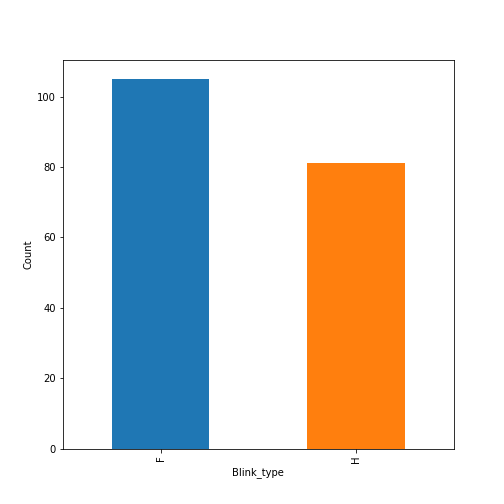
The dataset contains more full blinks than half blinks. This means the classes are not perfectly balanced, which is commonly referred to as class imbalance.
The imbalance is minor here, but it is still important to consider because:
- smaller datasets may not contain enough examples of the minority class for a model to learn its patterns reliably
- a model may bias towards the majority class simply because it has seen more examples of it
- a model can achieve high overall accuracy while still making many mistakes on a minority class
How does class imbalance influence model performance?
Consider the following example where the imbalance is more extreme:
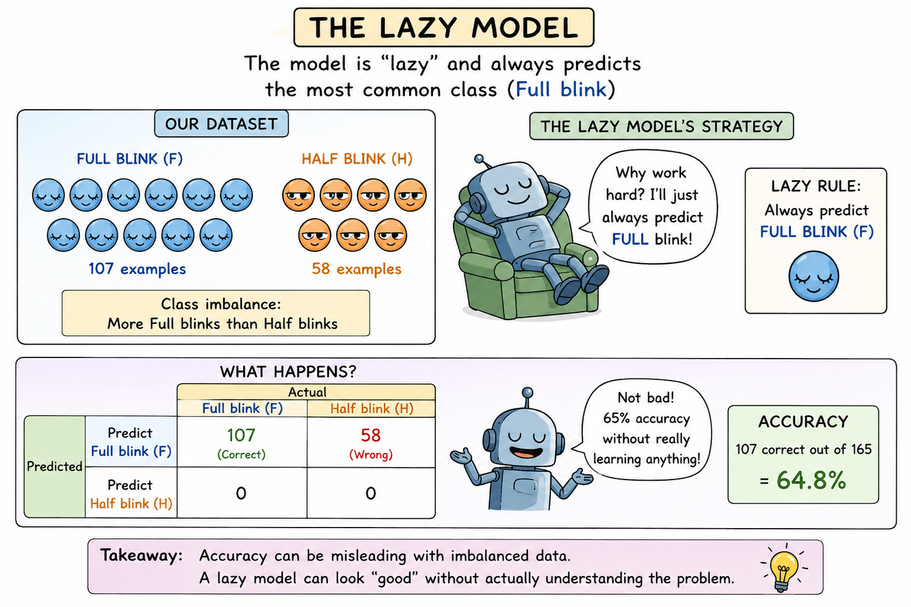
If a model always predicted the most common class,
Full blink, it would get 75 out of 100 examples correct.
That gives an accuracy of about 75%, even though the model has not
learned anything useful to differentiate between full and half
blinks.
This is why accuracy can be misleading when the classes are imbalanced. A model may look reasonably good overall while still performing poorly on the class we care about.
This problem becomes even more serious when the imbalance is larger. There are two main places where we need to think about imbalance:
- When we split the data for training and testing
- When we evaluate the model
We will look at both of these in this example and in more detail during the week.
Model Training & Validation
Model Training & Validation is used to assess whether our model can make good predictions on data it has not ‘seen’ before. We train the model using a part of the dataset, called the training set, and then test it on a separate part, called the test set. The test set gives us a way to check whether the model has learned useful patterns that might work on new examples.
A common analogy is revising for an exam: the training set is like the practice questions you learn from during preparation, while the test set is the real exam questions. Doing well on the practice questions is useful, but what really counts is answering new questions correctly. The assumption is that the training data is representative of unseen data (i.e., your practice questions are similar to your exam questions).
Preparing the data
First, we split the dataset into two separate components: features
(X) and labels (y). The features (X) include all the
measured characteristics (in this case the durations) of each blink
event that will be used as input to the machine learning model. The
labels (y) consist solely of the Blink_type
column, which represents the target variable we want our model to
predict.
PYTHON
# Separate the input features from the label column
# Features
X = df_blinks_c[["closing_duration", "paused_duration", "opening_duration"]].copy()
# Labels
y = df_blinks_c["Blink_type"]How to split the data
A simple approach would be to use a random split, for example 80% for training and 20% for testing. However, with a small dataset this can be unreliable. We might accidentally create a training set with very few half blinks, or a test set that is easier or harder than expected. This would make the model’s performance depend too much on one particular random split.
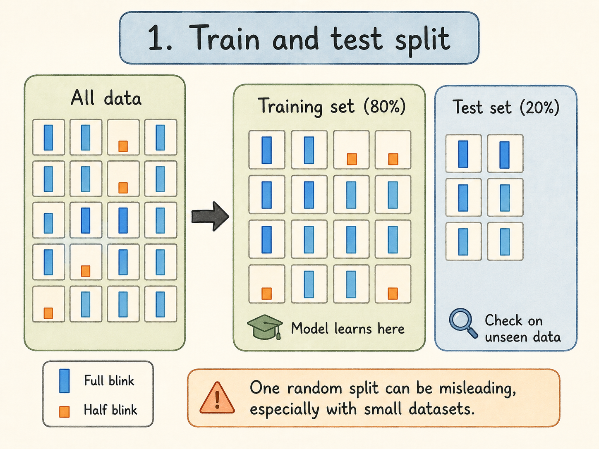
To get a more reliable estimate, we can use k-fold cross-validation. This splits the data into several smaller parts, called folds. The model is trained several times: each time, one fold is used as the test set and the remaining folds are used for training. This means each example gets used for testing once, giving us a better overall view of model performance.
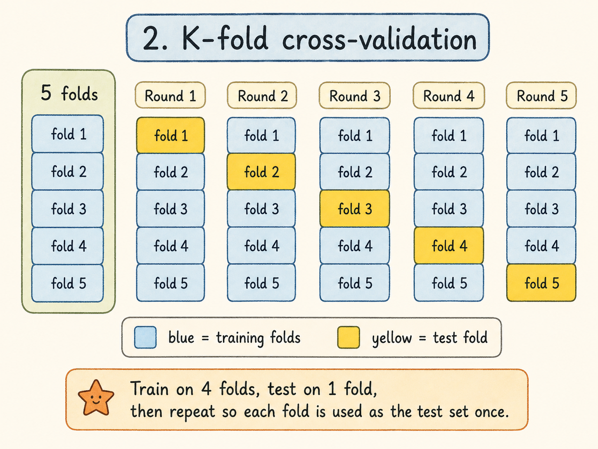
Because we have different blink types, we can use stratified k-fold cross-validation. This keeps the proportion of each blink type similar in each fold, making the training and test sets more representative. Being methodical with the way we split our test and training sets gives us more confidence that the results are not just due to one lucky or unlucky split.
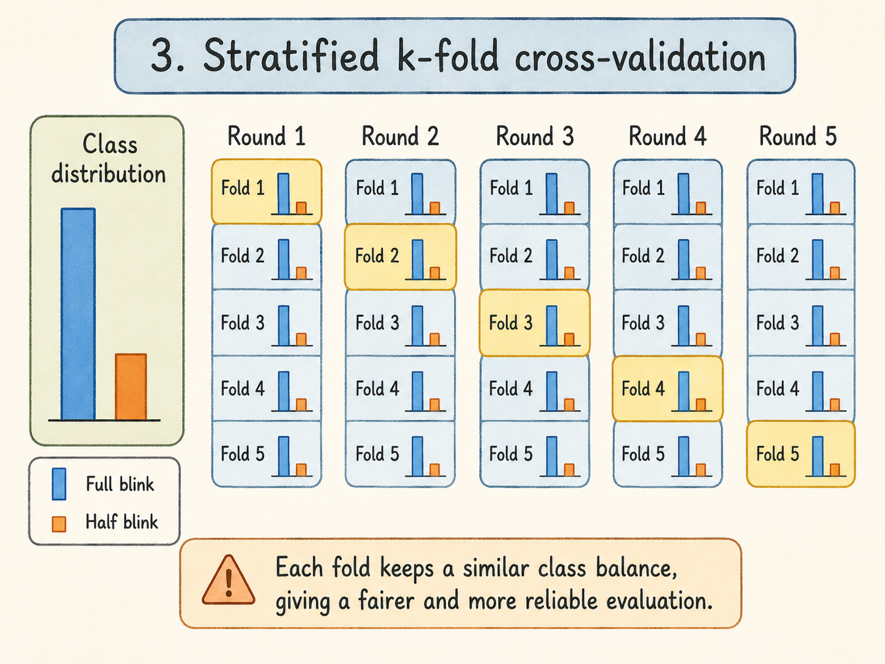
Stratified k-fold cross-validation in action
Let’s take a look at stratified k-fold cross-validation in Python. We will create 5 folds and then look at the balance and the index of each row placed in that fold.
PYTHON
# Create a stratified k-fold cross-validation splitter
# This keeps the proportion of blink types similar in each fold
k = 5
skf = StratifiedKFold(n_splits=k, shuffle=True, random_state=0) # Shuffle means we do not keep the original data order
# Print the row indexes used as the test set in each fold
for fold, (train_index, test_index) in enumerate(skf.split(X, y), start=1):
print(f"Fold {fold} test indexes:")
print(test_index)OUTPUT
Fold 1 test indexes:
[ 4 5 10 22 27 28 29 30 41 44 46 48 61 64 66 68 81 88
91 92 97 101 105 111 115 122 128 138 143 144 151 155 156 161 167 168
175 180]
Fold 2 test indexes:
[ 0 2 11 17 18 23 24 33 34 52 56 58 63 73 74 82 86 87
93 95 98 104 106 112 118 121 131 133 137 140 141 148 149 158 163 166
178]
Fold 3 test indexes:
[ 8 12 14 20 21 25 32 37 43 51 55 59 60 67 70 72 76 79
84 89 109 114 120 123 127 134 136 142 152 153 159 170 171 172 177 184
185]
Fold 4 test indexes:
[ 1 3 13 16 19 31 35 39 47 53 54 65 71 77 78 80 83 85
90 94 96 99 102 116 117 124 130 132 135 146 150 157 160 162 169 174
183]
Fold 5 test indexes:
[ 6 7 9 15 26 36 38 40 42 45 49 50 57 62 69 75 100 103
107 108 110 113 119 125 126 129 139 145 147 154 164 165 173 176 179 181
182]Now that we have selected a process for splitting our data into training and validation sets, we need to pick models to train.
Model Selection
Decision tree
The first model we will use is a decision tree. We will use it as a baseline model because its simplicity provides a high level of interpretability and explainability. We might want to start gaining an understanding of which features are important for making predictions and in which way they are used. A decision tree naturally reveals this by showing us the sequence of decisions (feature splits) it makes, along with the thresholds it uses. This makes it easy to see which feature is most influential in classifying the blink type. As a result, using a decision tree helps us both establish a benchmark for predictive accuracy and gain direct insights into the factors driving our classifications.
PYTHON
# Create a decision tree with a max depth
tree_model = DecisionTreeClassifier(random_state=0, max_depth=3)
# Get cross-validated predictions from the decision tree model
# using stratified k-fold cross-validation.
tree_predictions = cross_val_predict(tree_model, X, y, cv=skf)How does the tree make predictions, and why are we setting the maximum depth?
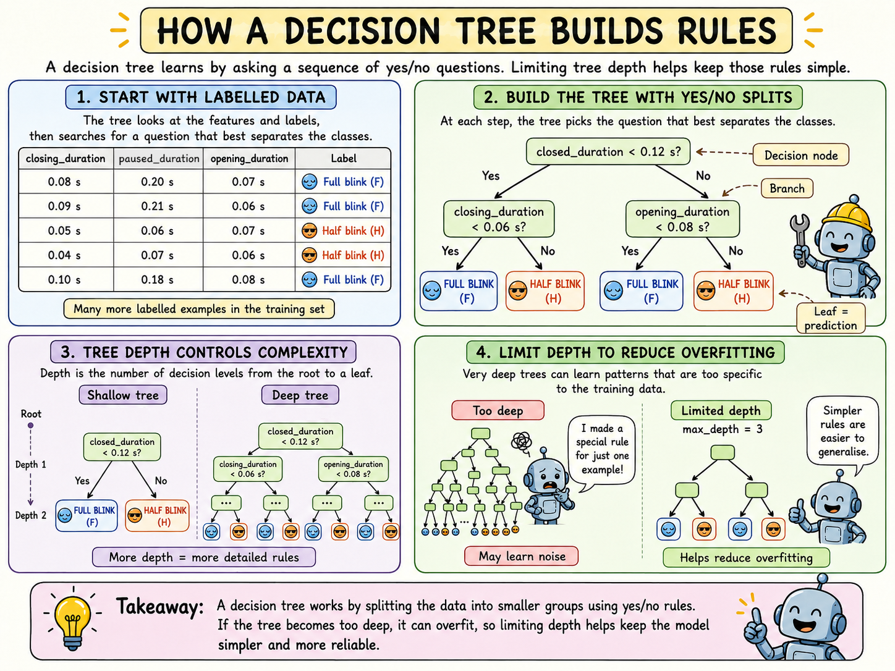
A decision tree classifier learns from the training
data by looking for simple rules that separate the blink types. For
example, it might learn that blinks with a longer
paused_duration are more likely to be full
blinks, while shorter ones may be more likely to be
half blinks. The tree turns these patterns into a set
of yes/no questions.
When building the tree, the model chooses questions that make the groups as homogeneous as possible. By default, scikit-learn uses a measure called Gini impurity. A group has low Gini impurity when most examples in it belong to the same class. So, the tree tries to make splits where the resulting groups are mostly full blinks or mostly half blinks. We can use our Python skills to visualise a tree fitted to the whole dataset.
Visualise the tree
We will generate a tree from all of the data we have so we can visualise it. We should not use a model like this as evidence of how well the model will perform, because the model has already seen all of these examples.
DecisionTreeClassifier(max_depth=3, random_state=0)In a Jupyter environment, please rerun this cell to show the HTML representation or trust the notebook.
On GitHub, the HTML representation is unable to render, please try loading this page with nbviewer.org.
Parameters
| criterion | 'gini' | |
| splitter | 'best' | |
| max_depth | 3 | |
| min_samples_split | 2 | |
| min_samples_leaf | 1 | |
| min_weight_fraction_leaf | 0.0 | |
| max_features | None | |
| random_state | 0 | |
| max_leaf_nodes | None | |
| min_impurity_decrease | 0.0 | |
| class_weight | None | |
| ccp_alpha | 0.0 | |
| monotonic_cst | None |
Depending on your OS and Python version you may have an interactive box labelled DecisionTreeClassifier. Python is showing us the model object we have created. It lists many possible parameters that can be changed to control how the model behaves.
At this stage, do not worry about understanding every parameter just be aware these are options that you can use to control how the model behaves, for now we are using the defaults.
PYTHON
# Plot the first 3 levels
plt.figure(figsize=(14, 8))
# Visualise the trained decision tree.
# The feature names show which variables are used at each split.
# The class names show the possible blink types.
# filled=True colours the boxes by predicted class.
# max_depth=3 keeps the plot readable by only showing the first three levels.
plot_tree(tree_model, feature_names=X.columns, class_names=tree_model.classes_, filled=True)
plt.show()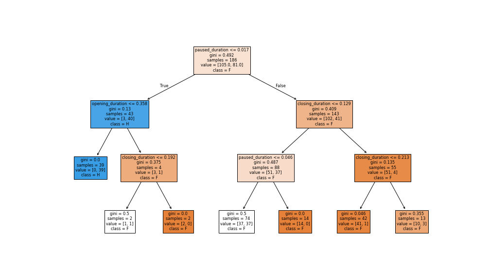
We can see that the tree’s depth is limited to 3. The reason we set this limit is we use it to help the model generalise. In most cases, we want the model to learn broad patterns rather than very specific details from the training data.
If the tree becomes too specific to the training data, it will perform well on the examples it has already seen but it will struggle to classify new examples correctly. Thinking back to our exam analogy, this is like memorising the practice questions instead of learning the underlying ideas. When the real exam questions are slightly different from the training, then you are then unable to apply what you learnt.
This is called overfitting.
An example of overfitting
Overfitting is a common problem in machine learning, so we will take a little time to explore it using our blink example.
So far, we have used a decision tree with its depth limited to 3. This keeps the model relatively simple and makes the tree easier to interpret. But what happens if we do not limit the depth of the tree?
Matching the previous restricted tree, we will train an unrestricted
tree on the full dataset but now with no max_depth.
PYTHON
# Create an depth unrestricted tree
unrestricted_tree_model = DecisionTreeClassifier(random_state=0)
# Train this new tree on the full dataset
unrestricted_tree_model.fit(X, y)DecisionTreeClassifier(random_state=0)In a Jupyter environment, please rerun this cell to show the HTML representation or trust the notebook.
On GitHub, the HTML representation is unable to render, please try loading this page with nbviewer.org.
Parameters
| criterion | 'gini' | |
| splitter | 'best' | |
| max_depth | None | |
| min_samples_split | 2 | |
| min_samples_leaf | 1 | |
| min_weight_fraction_leaf | 0.0 | |
| max_features | None | |
| random_state | 0 | |
| max_leaf_nodes | None | |
| min_impurity_decrease | 0.0 | |
| class_weight | None | |
| ccp_alpha | 0.0 | |
| monotonic_cst | None |
PYTHON
# Print model complexity stats
print(
"Restricted tree depth:", tree_model.get_depth(), "\n"
"Restricted tree leaves:", tree_model.get_n_leaves(), "\n"
"Unrestricted tree depth:", unrestricted_tree_model.get_depth(), "\n"
"Unrestricted tree leaves:", unrestricted_tree_model.get_n_leaves()
)OUTPUT
Restricted tree depth: 3
Restricted tree leaves: 7
Unrestricted tree depth: 10
Unrestricted tree leaves: 41PYTHON
# Create a large figure
plt.figure(figsize=(30, 15))
# Plot the unrestricted tree
plot_tree(unrestricted_tree_model, feature_names=X.columns, class_names=unrestricted_tree_model.classes_, filled=True, rounded=True, fontsize=8)
plt.show()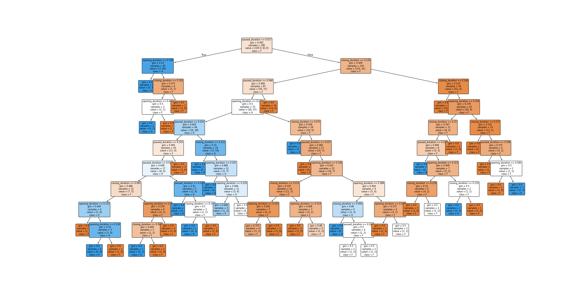
The unrestricted tree is much more complicated. It has been allowed to keep splitting the data into smaller and smaller groups.
To see this more clearly, we can look at one of the deepest paths in the tree. This path shows the sequence of questions the model asks before reaching one final prediction:
paused_duration > 0.01667223
closing_duration <= 0.12921879
paused_duration <= 0.04585071
opening_duration <= 0.27944404
paused_duration <= 0.03336948
paused_duration <= 0.03336114
paused_duration <= 0.01668474
closing_duration <= 0.08340284
opening_duration > 0.13344176
opening_duration <= 0.23356690This path shows how specific an unrestricted decision tree can become. The tree is not just asking broad questions, such as whether a blink has a long or short duration. For example, it has created a very narrow rule for paused_duration:
0.01667223 < paused_duration <= 0.01668474This interval is only around 0.00001 seconds wide. That is far too precise to be interpreted as a meaningful biological difference in blink behaviour. Instead, it suggests that the model is fitting very small quirks in this particular training dataset.
The key point is that a more complex tree is not always a better tree. A very deep tree can fit the training data very closely by creating highly specific rules, but those rules may not work well on new examples.
This is why we are interested in limiting the depth of the tree. Limiting depth encourages the model to learn broader patterns rather than memorising the training data.
Generally we would not simply guess the best value for max_depth. A better approach would be to test a range of possible depths and choose the one that performs best. We are not adding that extra step here, but the important idea is that model complexity should be chosen based on performance on unseen data, not just performance on the training data.
Overfitting is not just a decision tree problem. We have explored it here using tree depth because it is easy to visualise, but the wider lesson is that many machine learning models can become too closely fitted to their training data.
Random forest model
For our second model we will use a random forest. A random forest is built using many decision trees rather than just one. If we consider a decision tree as a trained expert, a random forest is like a council of experts. Each tree gives its own opinion, and the final prediction is decided by majority vote.
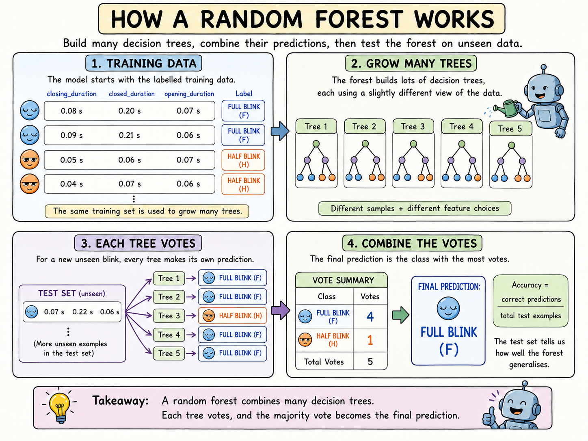
Why might we use a random forest over a decision tree?
We might use a random forest because it is usually more robust than a single decision tree. A single tree can sometimes rely too heavily on one particular split in the data, which can make it sensitive to small changes in the training set. A random forest reduces this problem by building lots of slightly different trees and combining their results. Each tree learns its own set of rules for separating the blink types, based on the features. The analogy here is that different trees can learn different aspects of the underlying relationships that a single tree may not capture in a single structure. A useful way to think about this is that each tree gets a slightly different view of the problem. One tree might focus more on the paused_duration, while another might make better use of opening duration. By combining these different views, the random forest can often make a more reliable prediction than a single tree on its own.
When the model is given a new blink example, each tree makes its own prediction. Some trees may predict Full blink (F), while others may predict Half blink (H). The random forest then combines these predictions using a majority vote. The class with the most votes becomes the final prediction. This means the model is not relying on just one tree. Instead, it uses the combined judgement of many trees, which often gives more stable and reliable predictions. A trade-off is that explainability becomes more difficult. With a single decision tree, we can follow one sequence of decisions from start to finish. In a random forest, we may be combining predictions from hundreds or even thousands of trees, so it becomes more challenging to track exactly how and why a final decision was made.
Let’s take a look at the code for a random forest:
PYTHON
# Create a random forest
# n_estimators controls how many decision trees are used in the forest
forest_model = RandomForestClassifier(
# Use 100 trees in the forest.
n_estimators= 100,
# Use bootstrap resampling.
bootstrap= True,
# Limit the depth of each tree.
max_depth= 3,
# Keeps the result reproducible each time we run the code.
random_state= 0
)
forest_predictions = cross_val_predict(forest_model, X, y, cv=skf)Model accuracy
Now that we have trained two models, it is time to look at their accuracy performance.
PYTHON
# Calculate the overall accuracy for the decision tree
tree_accuracy = accuracy_score(y, tree_predictions)
# Print accuracy to two decimal places
print(f"Decision tree accuracy: {tree_accuracy:.2f}") OUTPUT
Decision tree accuracy: 0.75PYTHON
# Calculate the overall accuracy for the random forest
forest_accuracy = accuracy_score(y, forest_predictions)
# Print accuracy to two decimal places
print(f"Random forest accuracy: {forest_accuracy:.2f}") OUTPUT
Random forest accuracy: 0.81All of our hard work has been distilled down to these two numbers. Should we be disappointed?, impressed? or just confused about these numbers? Results can be difficult to interpret and can often be misleading without the wider context. That’s why we are going to evaluate our results in the next section.
Results and Evaluation
How do we know how well our model is performing?
First, let’s think about what good performance would look like for this problem. At the heart of the problem we have two classes to predict: full blink and half blink. Earlier, we saw that a lazy model can get a ‘good’ accuracy simply by always predicting the most common class.
Now let’s consider an even simpler baseline: a blind model. This model does not look at the data at all. Instead, it randomly chooses between the two classes, like tossing a coin. This gives us another simple point of comparison before we evaluate our actual machine learning models.
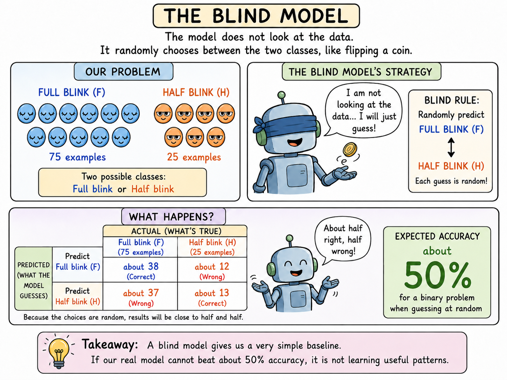
The blind model does not learn. It does not even look at the data; it just randomly guesses between the two classes. Over enough predictions, we would expect this to result in approximately 50% accuracy.
The blind model tells us what performance looks like if the model is just guessing. The lazy model tells us what performance looks like if the model always predicts the most common class. Our real models should do better than both of these baselines before we can be confident that they are learning useful patterns.
Our intuition tells us that we should not always expect exactly 50% accuracy from a small number of predictions. We would naturally expect some variation each time the blind model makes its predictions. Let’s test out that idea by first thinking about how we would create the blind model in Python and then collating our results as a group.
🤖 Creating the blind model in code
In your groups think about how you could implement the blind model in python. Create the code and generate an accuracy result.
Hints:
- What structure would you need to generate predictions and calculate
accuracy.
- What are the possible values for
Blink_type? - Have a look at
np.random.
PYTHON
# Set the random seed
np.random.seed(2026) # This value needs to be changed to get different results
# Generate randomly between 'F' & 'H' as many times as we have rows
blind_predictions = np.random.choice(["F", "H"], size=len(y))
# Calculate the accuracy
blind_accuracy = accuracy_score(y, blind_predictions)
# Print the result
print("Blind model accuracy:", blind_accuracy)OUTPUT
Blind model accuracy: 0.532258064516129Collating blind model results
Now that you have created the blind model, each group should have an accuracy score. To look at the variation we will collate them and calculate the mean and standard deviation.
PYTHON
# enter the accuracy values from each group into the numpy array
blind_model_accuracy_scores = np.array([
0.49, 0.52, 0.47 # replace with real results
])
print(
f"Mean blind model accuracy: {blind_model_accuracy_scores.mean():.2f}\n"
f"Standard deviation: {blind_model_accuracy_scores.std():.2f}"
)OUTPUT
Mean blind model accuracy: 0.49
Standard deviation: 0.02We can see that the blind model results are not always exactly 50%. This is expected because the blind model is making random predictions, and random results can vary, especially when the number of predictions is relatively small.
By collating the results across groups, we get a better sense of the blind model’s typical performance. The mean shows the average performance across repeated attempts, while the standard deviation shows how much the blind model’s accuracy varied.
Using a confusion matrix to gain insight into model performance
To better understand how our models predicted each class, we can display the results as a confusion matrix. This highlights where the model makes correct predictions and where it confuses one class for another.
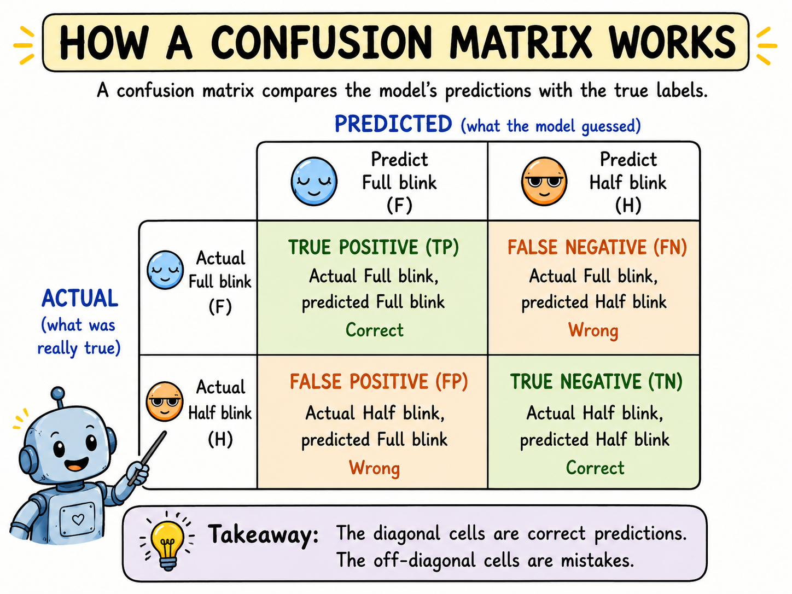
Note: Confusion matrices may not always take this format, so make sure you read the axes carefully.
Let’s go ahead and generate a confusion matrix for both sets of results.
PYTHON
# Create a figure
fig, ax = plt.subplots(figsize=(6, 5))
# Create a confusion matrix comparing the true blink labels with the decision tree predictions
ConfusionMatrixDisplay.from_predictions(y, tree_predictions, labels=["F", "H"], display_labels=["Full blink", "Half blink"], ax=ax);
# Add labels to each square
box_labels = [["Correct", "Wrong"], ["Wrong", "Correct"]]
for row in range(2):
for col in range(2):
ax.text(col, row + 0.25, box_labels[row][col], ha="center", va="center", fontsize=12, fontweight="bold")
# Add titles and show
plt.title("Decision tree confusion matrix")
plt.tight_layout()
plt.show()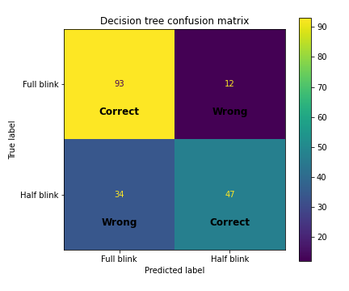
PYTHON
# Create a figure
fig, ax = plt.subplots(figsize=(6, 5))
# Create a confusion matrix comparing the true blink labels with the random forest predictions
ConfusionMatrixDisplay.from_predictions(y, forest_predictions, labels=["F", "H"], display_labels=["Full blink", "Half blink"], ax=ax);
# Add labels to each square
box_labels = [["Correct", "Wrong"], ["Wrong", "Correct"]]
for row in range(2):
for col in range(2):
ax.text(col, row + 0.25, box_labels[row][col], ha="center", va="center", fontsize=12, fontweight="bold")
# Add titles and show
plt.title("Random forest confusion matrix")
plt.tight_layout()
plt.show()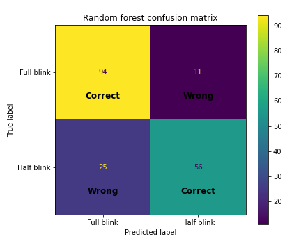
Both confusion matrices show the same general pattern: the models identify full blinks more reliably than half blinks. To examine this in more detail, we can look at the percentage of each blink type correctly identified. This is known as recall.
| Model | Full blink recall | Half blink recall |
|---|---|---|
| Decision tree | 82% | 67% |
| Random forest | 88% | 72% |
The random forest performs better than the decision tree for both blink types. However, both models still perform better on full blinks than half blinks. There are two possible explanations for this:
- Class imbalance: there are more full blink examples in the dataset, so the models have more information about what full blinks look like.
- Annotation subjectivity: some half blinks may sit close to the boundary between half and full blinks, making them harder to label consistently.
These explanations are not mutually exclusive. The model may be affected by both the structure of the dataset and the difficulty of defining a clear boundary between half and full blinks. Before we interpret these results in more detail, we should check that the random forest performance is reasonably stable and not overly dependent on one particular cross-validation split.
Repeating the random forest evaluation
The confusion matrix gives us a useful summary of how the random forest performed, but it is based on one particular 5-fold cross-validation split. Because the data is divided into folds at random, the exact result may change slightly if we repeat the evaluation with a different split.
To explore this, we can run the random forest multiple times using different random cross-validation splits. This allows us to report the mean accuracy and standard deviation, rather than relying on a single accuracy value.
The mean accuracy tells us the typical performance of the model. The standard deviation tells us how much the result varies between repeated runs. We will also save the predictions from each repeat so that we can use them later for error analysis.
PYTHON
# Add an explicit row ID so we can track each blink across repeated runs
df_blinks_c = df_blinks_c.reset_index(drop=True).copy()
df_blinks_c["blink_id"] = df_blinks_c.index
# Set how many times to repeat the evaluation
n_repeats = 10
# Create empty lists to store results
accuracy_scores = []
all_predictions = []
# Repeat the random forest evaluation
for i in range(n_repeats):
# Create a new random 5-fold cross-validation split
skf = StratifiedKFold(n_splits=5, shuffle=True, random_state=i)
# Create the random forest model
forest_model = RandomForestClassifier(n_estimators=100, bootstrap=True, max_depth=3, random_state=i)
# Get one prediction for each blink using a model that was not trained on that blink
forest_predictions_repeat = cross_val_predict(forest_model, X, y, cv=skf)
# Store the accuracy for this repeat
accuracy_scores.append( accuracy_score(y, forest_predictions_repeat) )
# Store the row-level predictions for later error analysis
repeat_predictions = pd.DataFrame({
"blink_id": df_blinks_c["blink_id"].values,
"iteration": i,
"true_label": np.array(y),
"predicted_label": forest_predictions_repeat
})
# Compare prediction and label to assess predicition
repeat_predictions["correct_prediction"] = (repeat_predictions["true_label"] == repeat_predictions["predicted_label"])
all_predictions.append(repeat_predictions)
# Combine all repeated predictions into one dataframe
rf_repeated_predictions = pd.concat(all_predictions, ignore_index=True)
# Convert accuracy scores to an array
accuracy_scores = np.array(accuracy_scores)
# Print the repeated cross-validation results
print(
f"Mean random forest accuracy: {accuracy_scores.mean():.2f}\n"
f"Standard deviation: {accuracy_scores.std():.2f}"
)OUTPUT
Mean random forest accuracy: 0.80
Standard deviation: 0.01With 10 repetitions, we now have a more reliable estimate of the random forest’s typical performance. A small standard deviation suggests that the model performs consistently across different cross-validation splits. A large standard deviation would suggest that the result is more sensitive to how the data happens to be divided.
So far, we have looked at overall accuracy, class-level recall, and variation across repeated model evaluations. These results suggest that the engineered features are useful for prediction, but they do not fully separate full blinks from half blinks.
However, summary statistics still do not tell us which examples the model gets wrong, or why those mistakes happen. The next step is to look more closely at the incorrect predictions. This will help us explore whether errors are linked to particular blink types, individual horses, specific videos, or possible uncertainty in the labels.
Callout
Another option at this point in the process is to try and improve the model by tuning its hyperparameters, we will return to that later in the week. For now, we will focus on understanding where the model is failing rather than tuning it for the best possible performance.
Error analysis
Often, we can gain useful insight into a model by looking at the examples it got wrong. This is called error analysis.
The confusion matrices showed that the models do not make errors equally across both blink types. Both models were more likely to correctly identify full blinks than half blinks. This raises an important question, are the errors caused by:
- limitations in the model,
- limitations in the features,
- or limitations in the data itself?
Rather than only asking, “How accurate is the model?”, we can also ask more detailed questions:
- Which examples did the model misclassify?
- Does the model struggle with a particular type of blink?
- Are some videos or horses over-represented in the incorrect predictions?
For example, if errors are concentrated in a particular video, this may suggest a recording-quality issue. If errors are concentrated in a particular horse, this may suggest an individual behavioural difference. If errors are mostly concentrated around half blinks, this may suggest that the boundary between full and half blinks is difficult to define consistently.
This is an important step because a single accuracy does not provide the details of model behaviour. By looking directly at the errors, we can start to understand why the model is making mistakes. This can help us decide what to improve next, such as collecting more data, creating better features, or making the labelling rules clearer.
We could compare the errors from both models, but because the random forest was the stronger-performing model, we will focus on the repeated random forest predictions we saved earlier. We will start by calculating how often each blink was incorrectly predicted across the repeated evaluations.
PYTHON
# Create a column showing whether each prediction was incorrect
rf_repeated_predictions["incorrect_prediction"] = (
rf_repeated_predictions["correct_prediction"] == False
)
# Count how many times each blink event was predicted incorrectly
times_incorrect = (
# sum the number of incorrect predicitions for each blink type
rf_repeated_predictions.groupby("blink_id")["incorrect_prediction"]
.sum()
)
# Turn the result into a new dataframe
event_error_summary = pd.DataFrame({
"blink_id": times_incorrect.index,
"times_incorrect": times_incorrect.values
})
# Keep only blinks that were predicted incorrectly at least once
event_error_summary = event_error_summary[
event_error_summary["times_incorrect"] > 0
]
# Sort so the most frequently misclassified blinks appear first
event_error_summary = event_error_summary.sort_values(
by="times_incorrect",
ascending=False
)
# Show the number of blinks events and how many times they were incorrect
print(event_error_summary, "\n"
"Number of events:", len(event_error_summary.index)
)OUTPUT
blink_id times_incorrect
11 11 10
13 13 10
16 16 10
19 19 10
21 21 10
92 92 10
49 49 10
60 60 10
51 51 10
84 84 10
91 91 10
79 79 10
63 63 10
141 141 10
142 142 10
151 151 10
139 139 10
118 118 10
119 119 10
136 136 10
112 112 10
162 162 10
163 163 10
167 167 10
175 175 9
114 114 9
20 20 9
64 64 8
161 161 8
128 128 8
97 97 8
153 153 7
154 154 7
24 24 5
80 80 5
164 164 5
131 131 5
109 109 4
102 102 4
104 104 4
120 120 4
96 96 3
160 160 3
86 86 3
50 50 3
147 147 2
61 61 2
144 144 2
110 110 2
34 34 1
111 111 1
166 166 1
173 173 1
Number of events: 53We can now see that some blink events are always misclassified, some are never misclassified, and some are only misclassified in certain runs. To focus on the most consistent errors, we will continue with the events that were misclassified more than half of the time.
This threshold helps us focus on examples where the model is usually wrong, rather than examples that were only misclassified once or twice because of variation between cross-validation splits.
Selecting the problematic blinks
Now that we have identified the most commonly misidentifed blink events, we can investigate them further by finding those same events from the original dataset.
PYTHON
# Select the blink IDs that were misclassified more than half of the time
mispredicted_blink_ids = event_error_summary[
event_error_summary["times_incorrect"] > 5
]["blink_id"]
# Select those blink events from the original dataframe
mispredicted_blinks = df_blinks_c[
df_blinks_c["blink_id"].isin(mispredicted_blink_ids)
].copy()
# Add the number of incorrect predictions onto the selected rows
mispredicted_blinks = mispredicted_blinks.merge(
event_error_summary,
on="blink_id",
how="left"
)
# Show the first 5 problematic blink events
mispredicted_blinks[
["blink_id", "Blink_type", "times_incorrect", "video_id"]
].head(5)OUTPUT
blink_id Blink_type times_incorrect video_id
0 11 H 10 M-002
1 13 H 10 M-002
2 16 H 10 M-002
3 19 H 10 M-003
4 20 H 9 M-003Now we can see the full context for each event, this allows us to explore the data for any commonalities. We will check if a specific horse or video is over-represented in the mispredicted events.
Conclusion
Overall, this worked example shows that blink timing features can be used to build a model that can predict between full blinks and half blinks. The model performs better than a simple baseline, which suggests that duration does contain useful information. However, the results also show clear limitations: full and half blinks overlap in their duration patterns, so timing alone is unlikely to fully capture the difference between them.
This is not hugely surprising. The boundry between a full blink and a half blink is up for interpretation. Also a half blink may have a similar duration to a full blink just the eyelid may not travel as far. This means that our current features are useful, but they are missing an important part; the eyelid movement in distance.
Fortunately, we still have the raw video data. This means we can go back to the original source and start thinking about richer features, such as how much the eye closes, how the shape of the eye changes, or how the eyelid moves through time. In tomorrow’s session, we will begin to explore how raw data can be transformed into more informative features for machine learning.
Summary of learning outcomes
| Topic | What you have learnt | Why it matters |
|---|---|---|
| Machine learning workflow | You learnt that a typical machine learning project involves defining a problem, importing data, exploring it, preprocessing it, engineering features, training models, and evaluating results. | It gives you a practical structure you can reuse in your own projects. |
| Metadata | You learnt that understanding your data is key to using it correctly. | Without context, it is easy to interpret your data incorrectly. |
| Data wrangling | You learnt how to take multiple files and load, combine, and enrich them. | Real datasets are often messy, so you need to know how to organise them into a usable format. |
| Preprocessing | You learnt that inspecting and handling data correctly is important before modelling. | Poor-quality data can affect feature creation and model training, so it needs to be checked and cleaned before analysis. |
| Feature engineering | You learnt that raw measurements can be transformed into more useful features. | Models usually learn from features, so feature engineering is a key part of making raw data useful. |
| Exploratory visualisation | You learnt how to use plotting to inspect distributions, class overlap, and possible outliers. | Visualisation is a major tool for understanding your data before modelling. |
| Class imbalance | You learnt that datasets can contain imbalanced classes, and that this needs to be considered during evaluation. | Results such as accuracy can be misleading when one class appears more often than another. |
| Train/test thinking | You learnt that models should be evaluated on data they did not train on, so we can test whether they generalise to new examples. You also learnt practical ways to do this in Python. | This helps you judge a model fairly based on how well it handles unseen data. |
| Machine Learning Models | You learnt how to implement decision trees and random forests, and you now have an understanding of how decisions are made in each model. | This gives you both an interpretable baseline model and a more advanced model to use in your own projects. |
| Model evaluation | You learnt that accuracy and confusion matrices can be used to assess how well models classify full and half blinks. | Evaluation shows not only how often the model is correct, but also which mistakes it makes. |
| Confusion matrices | You learnt how to build and interpret confusion matrices, including how they show correct and incorrect predictions for each class. | They are a useful tool for evaluating your models and understanding your results. |
| Problem framing | You learnt a framework and terminology for describing your machine learning problem. | Being able to confidently describe your problem, and understand others talking about machine learning, is an important step. |
Key Points
- A typical machine learning project follows a structured pipeline: data exploration, cleaning, preprocessing, model selection, training, and evaluation.
- Even simple models like decision trees can provide valuable insights into which features drive predictions, making them excellent for building intuition and explainability.
- Don’t worry if you didn’t follow every detail. Remember, this was about gaining a high-level overview of the entire process, so that when we dive into each section in detail later, you’ll have the context to understand how it all fits together.